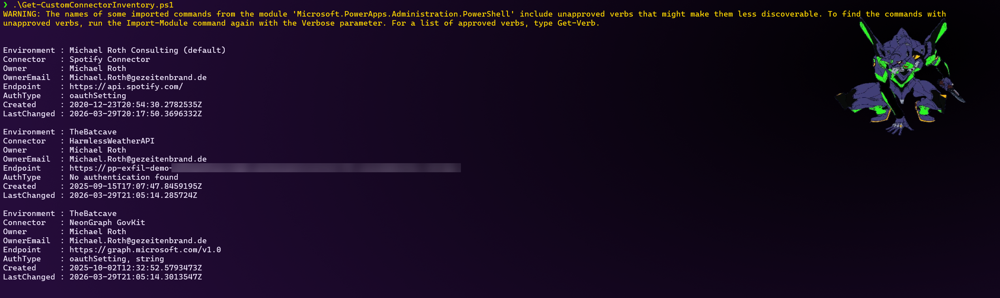

List Custom Connectors Across All Environments
Summary
Custom connectors are one of the easiest things to lose track of in a Power Platform tenant. Unlike standard connectors, they're built and registered by individual makers, and there's no single admin screen that shows all of them tenant-wide with the details that actually matter for governance: who created it, what authentication it uses, and what backend endpoint it calls.
This is a real gap: a maker can register a custom connector against any HTTPS endpoint, with or without authentication, and it will happily show up as an option in Power Automate and Power Apps for anyone in that environment. Nothing in the standard admin experience flags this for review.
This script enumerates every environment in the tenant and every custom connector in each one, and surfaces owner, endpoint, and authentication type in one readable list. The output is a plain object list you can inspect in the console, export to CSV, or pipe into whatever reporting you already use.
A known limitation: authentication type is read from the connector's connectionParameters. Some connectors define their authentication only inside their swagger/OpenAPI definition instead, which this script does not fetch or parse. Those will show up as No authentication found even though they may not actually be unauthenticated - treat that value as "no auth declared in connectionParameters", not as a guarantee the endpoint is open.

Prerequisites
- The
Microsoft.PowerApps.Administration.PowerShellmodule:Install-Module Microsoft.PowerApps.Administration.PowerShell - Environment Admin rights in each environment you want to inspect, or Global Admin / Power Platform Admin for a full tenant view.
Script
<#
.SYNOPSIS
Lists all custom connectors across every environment in your Power Platform tenant.
.DESCRIPTION
Custom connectors don't show up in most day-to-day admin views, so it's easy to
lose track of who created one, what it authenticates with, and what endpoint it
actually talks to. This script pulls that together in one table using the
official Power Apps admin module.
.EXAMPLE
.\Get-CustomConnectorInventory.ps1
.EXAMPLE
.\Get-CustomConnectorInventory.ps1 | Export-Csv connectors.csv -NoTypeInformation
.NOTES
Requires the Microsoft.PowerApps.Administration.PowerShell module and
Environment Admin rights (Global Admin for a full tenant view):
Install-Module Microsoft.PowerApps.Administration.PowerShell
#>
[CmdletBinding()]
param()
if (-not (Get-Module -ListAvailable -Name Microsoft.PowerApps.Administration.PowerShell)) {
throw "Missing module. Run: Install-Module Microsoft.PowerApps.Administration.PowerShell"
}
Import-Module Microsoft.PowerApps.Administration.PowerShell -ErrorAction Stop
Add-PowerAppsAccount
$environments = Get-AdminPowerAppEnvironment
$results = foreach ($env in $environments) {
$connectors = Get-AdminPowerAppConnector -EnvironmentName $env.EnvironmentName
if (-not $connectors) { continue }
foreach ($connector in $connectors) {
$internal = $connector.Internal
# connectionParameters is where API-key / OAuth2 auth normally shows up.
# Some connectors define auth only inside their swagger file instead, which
# isn't fetched here - those will show as "No authentication found" too,
# so treat that value as "not declared here", not as a hard guarantee.
$authType = ($internal.connectionParameters.PSObject.Properties.Value.type -join ", ")
if (-not $authType) { $authType = "No authentication found" }
$endpoint = $internal.backendService.serviceUrl
if (-not $endpoint) { $endpoint = $internal.primaryRuntimeUrl }
[PSCustomObject]@{
Environment = $env.DisplayName
Connector = $connector.DisplayName
Owner = $connector.CreatedBy.displayName
OwnerEmail = $connector.CreatedBy.email
Endpoint = $endpoint
AuthType = $authType
Created = $connector.CreatedTime
LastChanged = $connector.LastModifiedTime
}
}
}
$results | Sort-Object Environment, Connector
Contributors
| Author(s) |
|---|
| Michael Roth |
Disclaimer
THESE SAMPLES ARE PROVIDED AS IS WITHOUT WARRANTY OF ANY KIND, EITHER EXPRESS OR IMPLIED, INCLUDING ANY IMPLIED WARRANTIES OF FITNESS FOR A PARTICULAR PURPOSE, MERCHANTABILITY, OR NON-INFRINGEMENT.